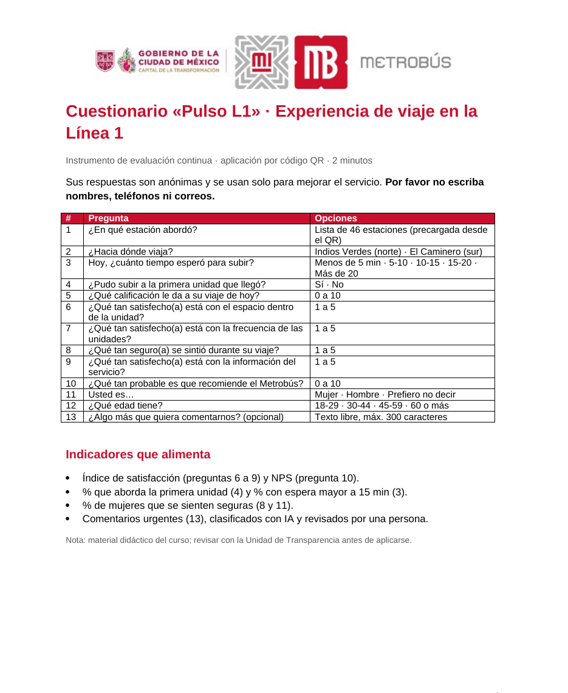
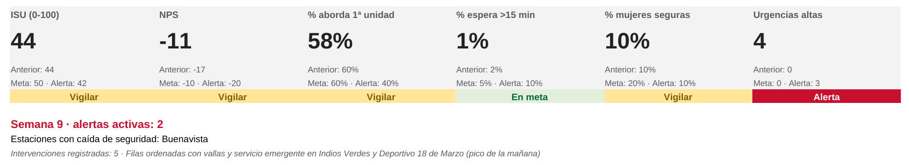
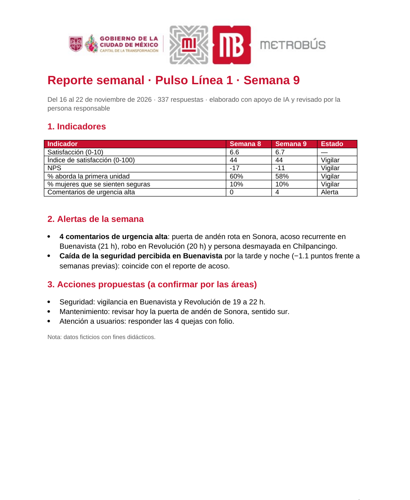

Automatización de procesos e instrumentos de evaluación
Carlos Ricardo Cruz Mendoza, DCC, IIMAS, UNAM
Material de la plática
Escanea el código con tu celular
carlosricardocm.github.io/
platicas/platicasmetrobus/platica2
- Esta presentación interactiva
- Datos de los ejercicios (tablero, respuestas y correos de prueba)
- Resultados de referencia para comparar
- Skill del documento institucional
Todos los datos son ficticios.
Hoy: del hallazgo a un proceso que se repite solo
Meta: medir cada semana la experiencia en la Línea 1, atender a tiempo las quejas urgentes y entregar un reporte sin capturar a mano.
1
Diseñar el cuestionario
Skill
2
Clasificar quejas de Gmail
Conector Gmail
3
Actualizar el tablero
Carpeta local · Excel
4
Reporte semanal
Skill + Drive + Gmail
5
Programarlo cada lunes
Tareas programadas
Lo que encontramos en la Plática 1
6.7
satisfacción general; NPS de −15
13.6 min
espera más larga, tramo Norte en el pico de la mañana
85%
de las mujeres se siente insegura de noche
Sin folio
las quejas no tienen seguimiento
“Para el informe mensual, días. Yo misma paso una tarde pasando la bitácora a Excel.”
— Supervisora de estación (entrevista ficticia)
Automatizar un proceso: de días a minutos
Hoy (manual)
- Las quejas llegan por correo, teléfono y redes
- Alguien las copia a mano a un Excel
- Se clasifican una por una
- El informe mensual tarda días y llega tarde
Con un agente
- Las quejas llegan a un solo buzón con folio
- El agente las lee y las clasifica
- El tablero se actualiza con fórmulas
- El reporte sale cada lunes; una persona lo revisa
ENTRADA
¿Qué llega y de dónde?
REGLAS
¿Cómo se decide o clasifica?
SALIDA
¿Qué se entrega y a quién?
RESPONSABLE
¿Quién revisa y decide?
Automatiza lo repetitivo; la persona decide
El agente (Cowork) lo hace
- Leer correos y archivos
- Clasificar comentarios y quejas
- Calcular indicadores y actualizar el tablero
- Redactar borradores y reportes
La persona lo decide
- Aprobar cada envío o cambio (modo Manual)
- Confirmar las urgencias y a quién turnarlas
- Responder a la persona usuaria
- Decidir acciones y recursos
Carpeta
archivos locales
Conectores (MCP)
Gmail y Drive
Skill
formato institucional
Tarea programada
cada lunes
¿Qué conviene automatizar?
Riesgo o criterio bajo
Riesgo o criterio alto
Se repite mucho
Automatiza
Capturar respuestas, calcular indicadores, generar el reporte semanal.
Automatiza con revisión
Clasificar quejas urgentes, preparar borradores de respuesta.
Se repite poco
Plantilla o skill
Oficios, minutas y fichas con formato institucional.
Decide la persona
Sanciones, presupuesto, decisiones sobre personas.
Cómo darle instrucciones a un agente
Las 5 partes de la Plática 1 (contexto, tarea, datos, formato y control) más 2 para un agente: criterios y límites.
Datos
“Busca en mi Gmail los correos con asunto «Queja Línea 1».”
Tarea
“Clasifica cada uno por tema, sentimiento y urgencia.”
+ Criterios
“Alta = riesgo para la integridad de las personas: acoso, robo, emergencia médica o riesgo de caída.”
Formato
“Hazme una tabla con folio, estación, tema y urgencia.”
+ Límites
“No envíes nada.”
Contexto y control siguen aplicando: di para qué es el resultado y pide cuántos registros procesó y qué no pudo hacer.
¿Qué hace bueno a un instrumento de evaluación?
Válido
Mide lo que dice medir: la pregunta de espera mide la espera, no la satisfacción general.
Confiable
Da resultados comparables: mismas preguntas, misma escala y mismo momento cada semana.
Breve
Se contesta en 2 minutos o menos; cada pregunta extra reduce cuántas personas responden.
Accionable
Cada pregunta lleva a una decisión de un área: si nadie usaría la respuesta, se quita.
Y ético: sin datos personales, con aviso de privacidad y participación voluntaria.
De la pregunta al indicador
| Pregunta del cuestionario | Indicador | Meta | Alerta |
|---|---|---|---|
| ¿Pudo subir a la primera unidad que llegó? | % aborda la 1ª unidad | 60% | menos de 40% |
| ¿Cuánto esperó? (rangos) | % espera mayor a 15 min | 5% | 10% o más |
| ¿Qué tan segura(o) se sintió? (1 a 5) | % de mujeres seguras (4 o 5) | 20% | menos de 10% |
| Comodidad, frecuencia, seguridad e información (1 a 5) | ISU (0 a 100) | 50 | menos de 42 |
| ¿Recomendaría el Metrobús? (0 a 10) | NPS | −10 | menos de −20 |
| Comentario abierto | Comentarios de urgencia alta | 0 | 3 o más |
ISU (Índice de Satisfacción del Usuario) = promedio ponderado: comodidad 29%, frecuencia 28%, seguridad 24% e información 19%, pesos obtenidos de la encuesta de la Plática 1. Metas y umbrales de ejemplo.
Ejercicio 1 · Diseñar el cuestionario de evaluación
Pasos
1
Abre una tarea nueva en Cowork con la carpeta CURSO.
2
Envía el texto de la derecha.
3
Pide que te muestre qué preguntas corrigió y por qué.
4
Abre el Word y revisa el encabezado.
ESCRIBE EN COWORK
Con el Informe_hallazgos_Linea1.docx (carpeta Material Encuesta), diseña un cuestionario de máximo 13 preguntas para contestar en 2 minutos con un código QR. Debe medir cada semana: espacio a bordo, espera, seguridad e información, más una calificación general y una pregunta abierta. No pidas datos personales. Revisa que no haya preguntas dobles ni sugestivas. Entrégalo con el skill documento-institucional-metrobus como Cuestionario_Pulso_L1.docx en la carpeta Material Evaluacion.
Resultado esperado: un Word con encabezado institucional y 13 preguntas, cada una ligada a un indicador.
Resultado: un instrumento corto, claro y medible
Qué revisar
- Una idea por pregunta: “frecuencia y limpieza” son dos preguntas
- Sin preguntas sugestivas: “¿No cree que ha mejorado…?”
- Rangos fáciles de recordar: “5 a 10 min”, no minutos exactos
- Pregunta sensible con opción “Prefiero no responder”
- Cada pregunta alimenta un indicador del tablero

Ejercicio 2 · Clasificar las quejas que llegan por Gmail
Pasos
1
Verifica en + › Conectores que Gmail esté activo.
2
Envía el texto de la derecha.
3
Revisa la tabla: ¿las urgencias son correctas?
4
Abre Gmail › Borradores y revisa las respuestas.
ESCRIBE EN COWORK
Busca en mi Gmail los correos con asunto «Queja Línea 1». Clasifica cada uno por tema, sentimiento y urgencia (Alta = riesgo para la integridad de las personas: acoso, robo, emergencia médica o riesgo de caída). Hazme una tabla con folio, estación, tema y urgencia. Para los de urgencia Alta prepara un borrador de respuesta empático que cite el folio y diga qué área lo atenderá. No envíes nada.
Resultado esperado: 4 urgencias Altas (Sonora, Buenavista, Revolución, Chilpancingo) con 4 borradores en Gmail; La Raza Media; Perisur Baja.
Resultado: 6 quejas clasificadas, 4 para atender hoy
| Folio | Estación | Tema | Urgencia |
|---|---|---|---|
| Q-001 | Sonora | Infraestructura | Alta |
| Q-002 | Buenavista | Seguridad (acoso) | Alta |
| Q-003 | Revolución | Seguridad (robo) | Alta |
| Q-004 | Chilpancingo | Seguridad (emergencia médica) | Alta |
| Q-005 | La Raza | Accesibilidad (elevador) | Media |
| Q-006 | Perisur | Espera | Baja |
Antes de enviar
- Una persona confirma cada urgencia
- Revisa y ajusta el borrador
- Turna al área el mismo día
- Registra el folio y la fecha
¿La IA clasifica bien? Mide el acuerdo con una persona
Cada mes
- Toma 30 clasificaciones al azar
- Una persona las clasifica sin ver la respuesta de Claude
- Acuerdo = coincidencias ÷ 30
- Revisa uno por uno los desacuerdos de urgencia
Ejemplo
90%
27 de 30 coinciden. Meta: 85% o más. El proceso se mantiene.
El error que más importa: una urgencia Alta clasificada como Baja. Si aparece uno, se corrige la instrucción aunque el acuerdo sea alto.
Metas, umbrales y semáforo del tablero
El valor alcanza la meta. No se hace nada extra.
Vigilar
Está entre la meta y el umbral. Se revisa la próxima semana.
Alerta
Cruza el umbral. Se turna hoy al área responsable.
| Semana 9 (datos simulados) | Valor | Meta | Umbral | Estado |
|---|---|---|---|---|
| ISU (0 a 100) | 44 | 50 | 42 | Vigilar |
| % espera mayor a 15 min | 1% | 5% | 10% | En meta |
| Comentarios de urgencia alta | 4 | 0 | 3 | Alerta |
Ejercicio 3 · Actualizar el tablero con la semana nueva
Pasos
1
Envía el texto de la derecha.
2
Aprueba cuando pida modificar el tablero.
3
Abre Tablero_evaluacion_L1.xlsx en Excel (hoja Tablero).
4
Compara con la siguiente diapositiva.
ESCRIBE EN COWORK
En la carpeta Material Evaluacion abre Respuestas_semana9.xlsx. Clasifica sus 24 comentarios con los mismos temas que usa Tablero_evaluacion_L1.xlsx (columnas tema_IA, sentimiento_IA y urgencia_IA). Después copia todas las filas al final de la hoja Respuestas del tablero, sin tocar las fórmulas, y cambia la semana a analizar a 9 en la hoja Parámetros. Dime qué alertas se activan y por qué.
Resultado esperado: 2 alertas: 4 comentarios de urgencia alta y caída de la seguridad percibida en Buenavista por la tarde y noche.
Resultado: dos señales distintas apuntan a Buenavista

Comentario urgente
“Ya van tres noches que un hombre se sube en Buenavista y se pega a las chavas en la zona de mujeres. Siempre como a las 9.”
Caída en la calificación
La seguridad percibida en Buenavista por la tarde y noche bajó 1.1 puntos frente a las semanas anteriores. Acción: turnar a Seguridad hoy.
Ejercicio 4 · Reporte semanal con logos, en Drive y por correo
ESCRIBE EN COWORK
Con el tablero en la semana 9 redacta el reporte semanal usando el skill documento-institucional-metrobus: indicadores de la semana 9 contra la 8, alertas, comentarios urgentes y 3 acciones propuestas. Guárdalo como Reporte_semanal_semana9.docx, súbelo a mi Google Drive en «Curso Metrobús» y prepara un borrador de correo para metrobusplatica@gmail.com con el enlace y un resumen de 5 líneas. No lo envíes.
Resultado esperado: Word con encabezado institucional, archivo en Drive y borrador en Gmail. Lo que antes tomaba días, en minutos.

El proceso semanal completo
1 · LUNES 8:00
Inicia la tarea
Tarea programada
2
Lee las quejas
Conector Gmail
3
Clasifica
Tema, sentimiento y urgencia
4
Actualiza el tablero
Carpeta local · Excel
5
Redacta el reporte
Skill institucional
6
Guarda y prepara correo
Drive + borrador en Gmail
7
La persona revisa y envía
Modo Manual
Para que funcione cada lunes
- La computadora encendida y Claude Desktop abierto a esa hora
- Conectores de Gmail y Google Drive activos
- El skill documento-institucional-metrobus instalado
- El tablero siempre en la carpeta Material Evaluacion, con el mismo nombre
Ejercicio 5 · Que se haga solo cada lunes
Pasos
1
En la barra lateral de Cowork abre Programadas.
2
Nueva tarea › Crear con Claude.
3
Escribe el texto de la derecha y responde sus preguntas.
4
Revisa nombre, horario e instrucciones y pulsa Programar.
ESCRIBE EN COWORK
Cada lunes a las 8:00: busca en mi Gmail las quejas «Queja Línea 1» de la semana anterior, clasifícalas por tema y urgencia, agrégalas al tablero de la carpeta Material Evaluacion, genera el reporte semanal con el skill documento-institucional-metrobus, súbelo a Drive en «Curso Metrobús» y déjame un borrador de correo con el resumen y las urgencias. No envíes nada sin mi aprobación.
Resultado esperado: la tarea aparece en Programadas; puedes ejecutarla ahora para probarla, pausarla o editarla.
Errores frecuentes y cómo evitarlos
| Error | Cómo evitarlo |
|---|---|
| Las filas se pegan dos veces en el tablero | Pide que diga cuántas filas había antes y después |
| Se sobrescriben las fórmulas | Escribe “sin tocar las fórmulas” y guarda un respaldo antes |
| Una urgencia Alta queda como Baja | Una persona confirma las Altas y revisa las Bajas con palabras clave (acoso, robo, caída) |
| Se envía un correo sin revisar | “No envíes nada” en la instrucción y modo Manual |
| El archivo queda con otro nombre o en otra carpeta | Nombre fijo y carpeta explícita en cada instrucción |
| La tarea programada no corre | Computadora encendida, Claude abierto; revisa el historial en Programadas |
Reglas para automatizar con responsabilidad
Modo Manual al empezar
Aprueba cada envío o cambio hasta confiar en el proceso.
Una persona responsable
Confirma urgencias y responde a la persona usuaria.
Revisión mensual
Compara 30 clasificaciones de Claude contra una persona; meta: 85% de acuerdo o más.
Cuentas y datos autorizados
La cuenta del curso es de práctica; nunca uses datos personales reales en ella.
Actividad: diseña la automatización de un proceso de tu área
En parejas · 7 minutos
1
Elige un proceso que se repita cada semana.
2
Llena la ficha de la derecha.
3
Ubícalo en la matriz: ¿automatiza, con revisión o decide la persona?
4
Comparte tu ficha con el grupo.
| Ficha | Ejemplo: quejas de la Línea 1 |
|---|---|
| Entrada | Correos «Queja Línea 1» en Gmail |
| Frecuencia | Diaria; reporte cada lunes |
| Reglas | Temas y definición de urgencia Alta |
| Salida | Tablero, reporte y borradores de respuesta |
| Responsable | Atención a usuarios |
| Riesgo | Alto si se pierde una urgencia |
| Decisión | Automatiza con revisión |
Gracias · Preguntas
Lo que construimos en las dos pláticas
- Análisis de encuesta, comentarios y entrevistas con Claude
- Un skill que hace documentos con el encabezado institucional
- Quejas de Gmail clasificadas, con borradores de respuesta
- Un tablero y un reporte semanal que se generan cada lunes
- Una ficha para automatizar un proceso de tu área